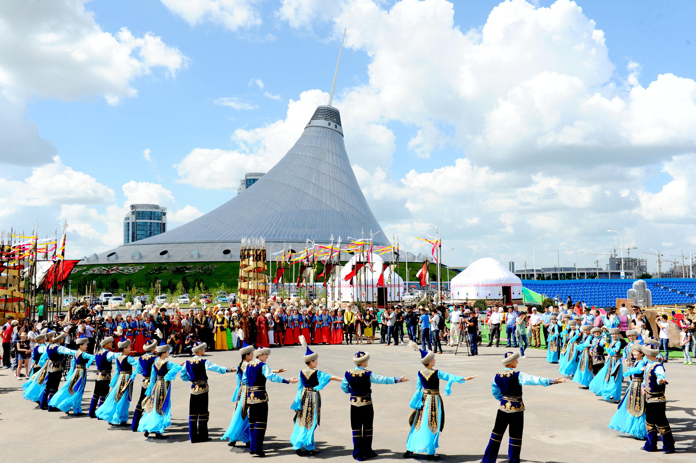
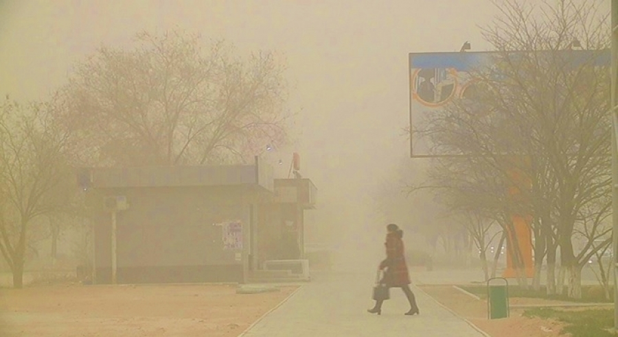

Коронавирусқа қарсы "Спутник V" вакцинасын әзірлеуге қатысқан
қазақ
Бірнеше ел өз азаматтарына салып жатқан коронавирусқа қарсы
"Спутник V" вакцинасын вирусологтор тобы әзірлеген. Құрастырушылар
қатарында Ілияс Есмағамбетов те бар...

Қазақстанда Наурыз мейрамын неше күн бойы тойлатпақ
Талқылауға арналған құжатты Қазақстанның Мәдениет және спорт
министрлігі ағымдағы жылдың 9 ақпанында жария етті. Талқылаудың
аяқталу күні - 16 ақпан...

Ауа райы бұзылады: Синоптиктер елімізде дауылды ескерту жариялады
15 ақпанда Ақмола облысының кей жерлерінде тұман, көктайғақ, жаяу
бұрқасын күтіледі. Оңтүстік-батыстан, оңтүстіктен жел соғады, күші
кей жерлерде...
Күніне неше шыныаяқ кофе ішу керек: Маман кеңес берді
Нурия Дианова мөлшерден көп ішу салдарынан тәуелділік пайда болуы
мүмкін екенін айтты. Сондай-ақ жүйке жүйесі біртіндеп жұқарады.
Маман кофені тек тамақтан соң ішуге кеңес береді...